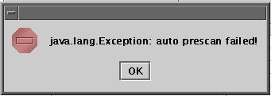
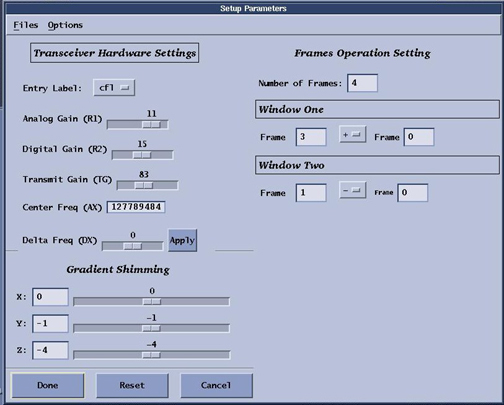
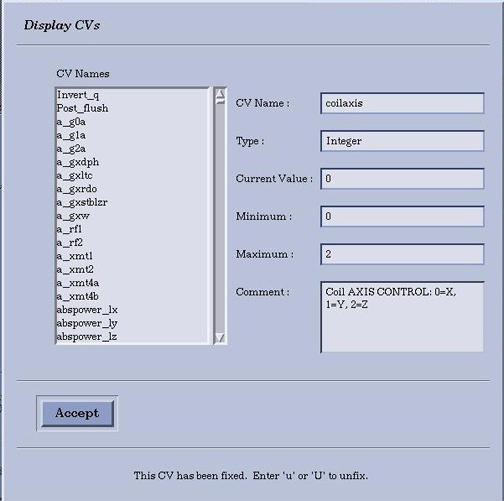
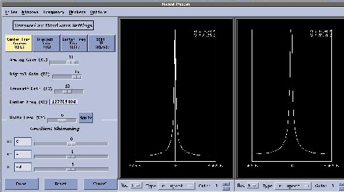
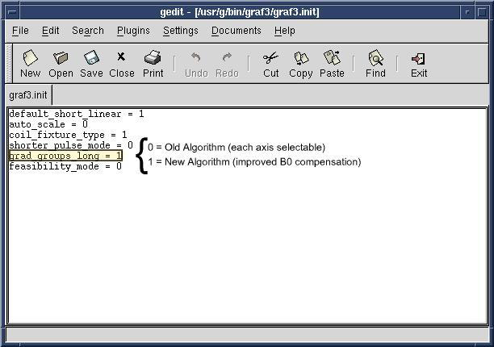

Operating Documentation
Direction 5440000, Rev# 5
Signa HDxt Service Methods
Module Version 1.0, Version Date 5/3/07
Operating Documentation |
Use this process to verify the 6-coil fixture is functioning properly. This is a useful check if you get the error message shown in Illustration 1:
Illustration 1: Prescan Failure

Switch to the Scan desktop.
The Grafidy 3 software sets up the Grafidy scan protocol. If you did not run the Grafidy software, set up a new scan with Patient Id: GE Service, Weight: 111. Change protocols to Service, click the [Other] button and select the [Grafidy protocol]. Click [Accept], and [Save Series].
Right click on Research Operations and select Setup Params. Refer to Illustration 2. Change settings to:
Number of frames: 4
Window one: Frame: 3 Frame: 0
Window two: Frame: 1 Frame: 0
Chose [Done] to close the frames window.
Right click on [Research Operations] and select [Display CVs] (control variables). Change the coilaxis cv to select an axis. See Illustration 3.
Press the [Accept] button, and then select [Download] (from the Research Operations menu).
Select [Manual Prescan] (Center Frequency Coarse Check begins).
From the Window menu, select [Display Two Windows] (double window appears). Two peaks should be visible with approximately the same amplitude. R1 and R2 should be greater than 5%. See Illustration 4.
If there is not much signal on either coil/window, check that the QD box is fully inserted to the coil connector and that all other cables leading to the fixture are tight.
If only one coil is low, check the cable from the coil to the MUX. Also verify that the small sample is within the coil.
When you have good signal, click [Done].
Select [Auto Prescan].
If auto prescan fails, try adjusting the rotary step attenuator up or down 10db. Then re-auto prescan until auto prescan is successful.
Illustration 2: Setup Parameters Window

Illustration 3: Display CVs Panel

Illustration 4: Two Frame Manual Prescan Window

This work-around is only suggested in extreme circumstances. It does not use the improved B0 compensation algorithm. It may require swapping functioning coils for the defective coils. Since each coil is calibrated for its position in the fixture, the replaced coil may not work well in the alternate position. If you use this work around.
| ||||
| If You Use The Bad Coil Work Around, Make Sure To Rerun Grafidy 3 With A Fully Operational And Calibrated Kit Once Repairs Are Made. | ||||
Edit the /usr/g/bin/graf3/graf3.init configuration file, and change the grad_groups_long parameter to 0. (grad_groups_long = 0 for original algorithm, 1 for new algorithm.) See Illustration 5.
Restart the grafidy 3 software. Select the axes which have good coils, and run the scan.
If possible use functioning coils to replace defective ones.
When finished, reset grad_groups_long=1 in the /usr/g/bin/graf3/graf3.init configuration file.
Illustration 5: grad_groups_long Algorithm Verification
